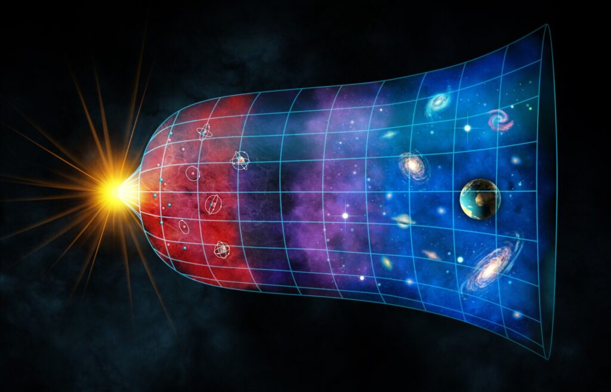
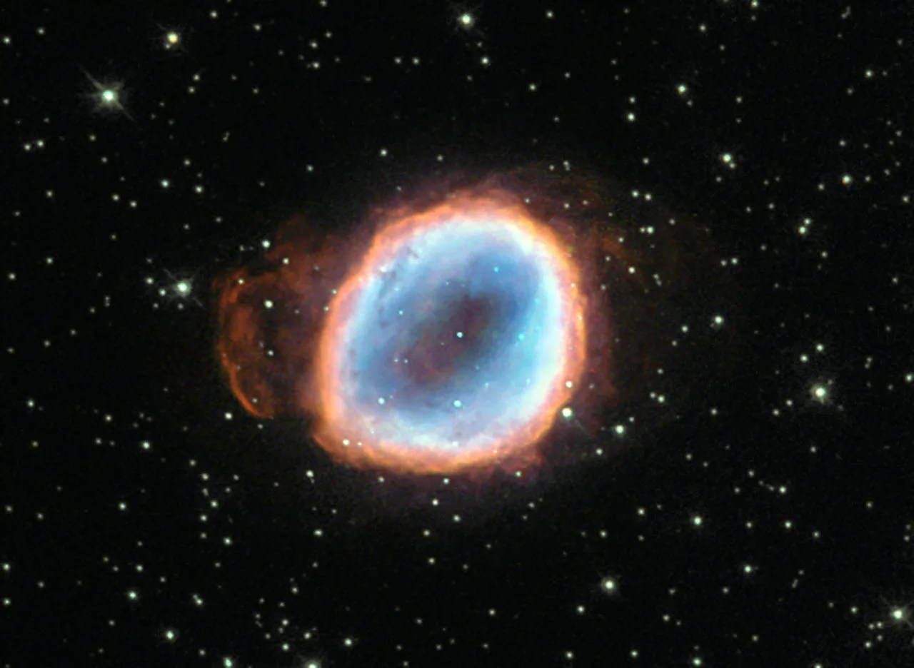
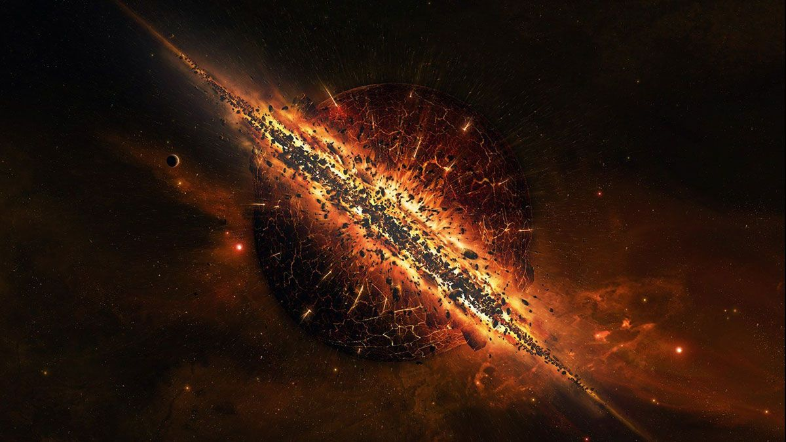
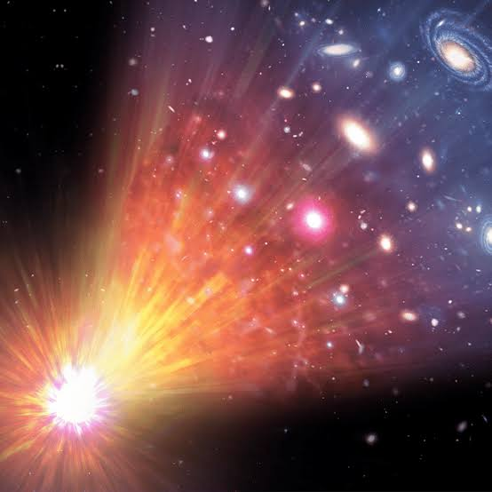

An Introduction
Since the very beginning of time, about 14 billion years ago when the Big Bang occured, the universe has been expanding. Ever since Albert Einstein's theory of general relativity, cosmologists and other scientists have been able to expand their understanding of not only how we came to be, but also of how we will end. The universe seems like such an infinite concept, but eventually every last planet, every last piece of matter in the universe, will cease to exist. In 1998, scientists discovered that the universe is not only expanding, but also that the expansion was accelerating. This has fundamentally changed the way many cosmologists think about how the universe will end, allowing them to develop multiple significant theories. In this article, we will delve into three of them.

The Big Freeze
The Big Freeze, also known as "Heat Death", refers to the infinie expansion of the universe. The universe will continue to expand until every last planet, star, and particle is dead. It seems impossible that everything will die eventually, but it is true. If this theory is correct, then everything in the universe will meet a natural end, exhusting all of their energy.Even blackholes, which seem like immortal destructive forces, will eventually cease to exist. This would leave a cold, empty universe that would expand perpetually, hence the name heat death.
Due to our current understandings of the universe, cosmologists favor this theory the most. Because of the discovery of an accelerating universe (because of a force known, or rather unknown, called dark energy), cosmologists were able to rule out other theories. They believe the universe will continue to expand forever, even after everythings dies or evaporates. It would be a very lonely and cold fate, but overall more natural than some of the other theories.

The Big Rip
The Big Rip refers to, similar to The Big Freeze, an accelerating universe. However, where it differentiates is that that accelerating expansion will lead to the universe's ultimate demise. Due to an accelerating universe, it could potentially tear apart all matter, including stars, planets, and even subatomic particles. Whereas in The Big Freeze, where this driving force known as dark energy stays constant over time, in The Big Rip scenario, dark energy's energy density increases over time, leading to faster and faster expansion, causing the destruction of all matter on all levels.
This fate would be extremely harsh, so it is good that we have evidence that this will most likely not happen. Scientists were able to measure the parameter of dark energy, which showed a steady expansion rather than a cosmological rip.

The Big Crunch
The Big Crunch refers to the eventual collapse of the universe. Instead of the universe infinitly expanding, that expansion eventually reverses, causing all matter to collapse on itself. This theory focuses on the role of gravity in this reversal, where gravity overpowers mass and matter resulting in the collapse of the universe back to a singulairty (how it was before the Big Bang).
This theory is highly unprobable based on the current data we have. Because we know the universe's expansion is accelerating, the idea of gravity causing a reverse in that expansion is highly unlikely, but not neccessarily impossible.
